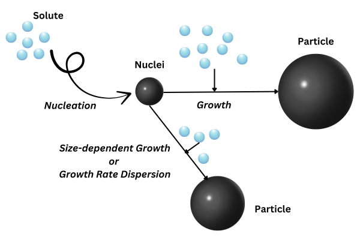

You're reading the documentation for a development version. For the latest stable documentation, please have a look at v5.1.X.
Primary Particle Formation#
In the following, we give a brief overview on the PBM equations for primary particle formation through growth, nucleation, growth rate dispersion. These equations can be combined with Aggregation Models and/or Fragmentation Models. For more information on the PBM implemented in CADET, please refer to [36] and [37].

Fig. 11 Nucleation, growth and growth rate dispersion in PBM. Note that dispersion is used to model (random) variance in growth speed, not the reduction of particle size.#
Population Balance Model in a CSTR#
We assume a well-mixed tank and choose the particle size \(x\in (x_c, \infty)\) as the internal coordinate, with \(x_c>0\) being the minimal particle size considered. The corresponding PBM is given as
where \(F_{in}, F_{out}\in \mathbb{R}^+\) are the volumetric inflow and outflow rates, \(V\in\mathbb{R}^+\) is the reactor volume, \(n(t, x)\colon [0, T_\text{end}] \times (x_c, \infty) \mapsto \mathbb{R}^+\) is the number density distribution, \(n_{in}\in\mathbb{R}^+\) is the number density distribution of the inlet feed, \(v_{G}\in\mathbb{R}^+\) is the particle growth rate, \(D_g\in\mathbb{R}^+\) is the growth dispersion rate.
The boundary conditions are given by the regularity boundary condition
and the nucleation kinetics boundary condition
where \(B_0\in\mathbb{R}^+\) is the nucleation kinetics factor representing particle nucleations of size \(x_c\in\mathbb{R}^+\).
The model is complemented by the following mass balance equation which accounts for the mass transfer between the particle phase and the solute phase
where \(c(t)\colon [0, T_\text{end}] \mapsto \mathbb{R}^+\) is the solute concentration in the bulk phase, \(c_{in}\in\mathbb{R}^+\) is the inlet solute mass concentration, \(\rho > 0\) is the nuclei mass density and \(k_v > 0\) is the volumetric shape factor of the particles.
Evolution of the reactor’s volume is governed by
Population Balance Model in a DPFR#
The PBM can also be formulated for a DPFR to model continuous processes. That is, we choose the axial position within a DPFR as the external coordinate \(z\in[0, L]\) and formulate the \(2D\) PBM
where \(n(t, x, z)\colon [0, T_\text{end}] \times (x_c, \infty) \times [0, L] \mapsto \mathbb{R}^+\) is the number density distribution, \(v_\text{ax}\in\mathbb{R}^+\) is the axial velocity and \(D_{ax}\in\mathbb{R}^+\) is the axial dispersion coefficient.
Boundary conditions for the internal coordinate are again given by Eq. 37 and Eq. 38.
For the external coordinate \(z\), Danckwerts boundary conditions are applied:
The mass balance equation for the solute \(c(t, z)\colon [0,T-\text{end}] \times [0,L] \mapsto \mathbb{R}^+\) is given by
As for the particle phase, the solute mass concentration subjects to the Danckwerts boundary conditions
Constitutive equations#
Constitutive equations describe the kinetic processes in the governing equations. The relative supersaturation \(s>0\) is:
where \(c_{eq}>0\) is the solute solubility in the solvent. The nucleation kinetics can be split into primary and secondary nucleation:
Which are in turn defined by the following constitutive equations. An empirical equation for primary nucleation is given by:
where \(k_p\in\mathbb{R}^+\) is the primary nucleation rate constant and \(u\in\mathbb{R}^+\) is a constant. An empirical power-law expression is used for the secondary nucleation:
where \(k_b\in\mathbb{R}^+\) is the secondary nucleation rate constant, \(b\in\mathbb{R}^+\) and \(k\in\mathbb{R}^+\) (usually set to \(1\)) are system-related parameters and \(M\in\mathbb{R}^+\) is the suspension density defined as
The following expression for the growth rate is implemented:
where \(k_g\in\mathbb{R}^+\) is the growth rate constant, \(\gamma\in\mathbb{R}^+\) quantifies the size dependence, and \(g, a, p\in\mathbb{R}^+\) are system-related constants.
For information on model parameters and how to specify the model interface, see Crystallization / Precipitation models.